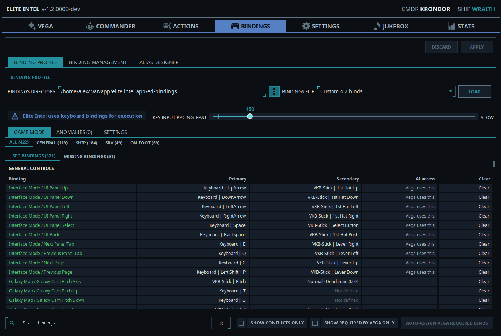
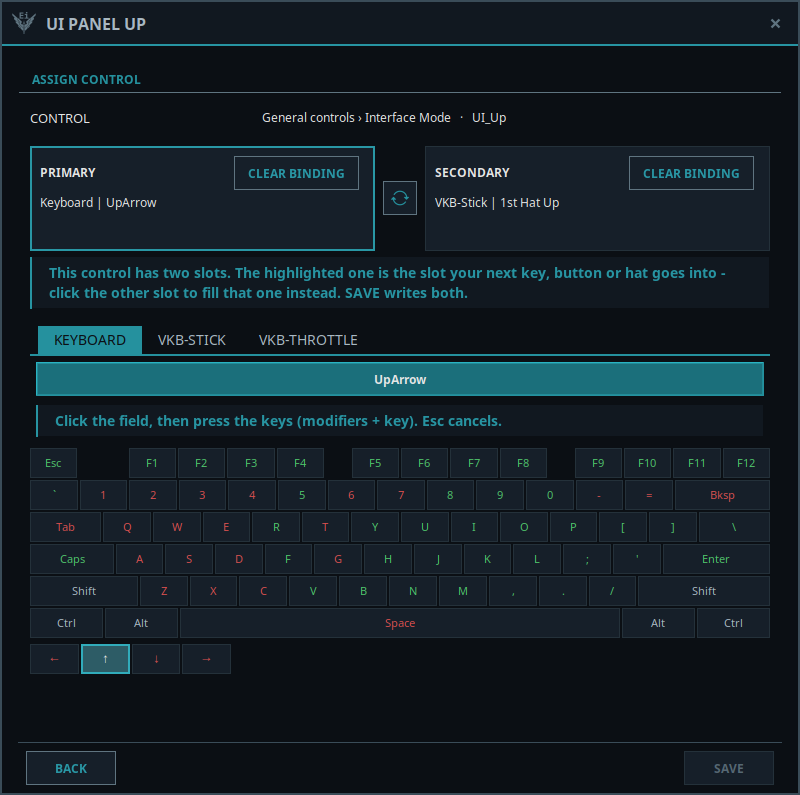
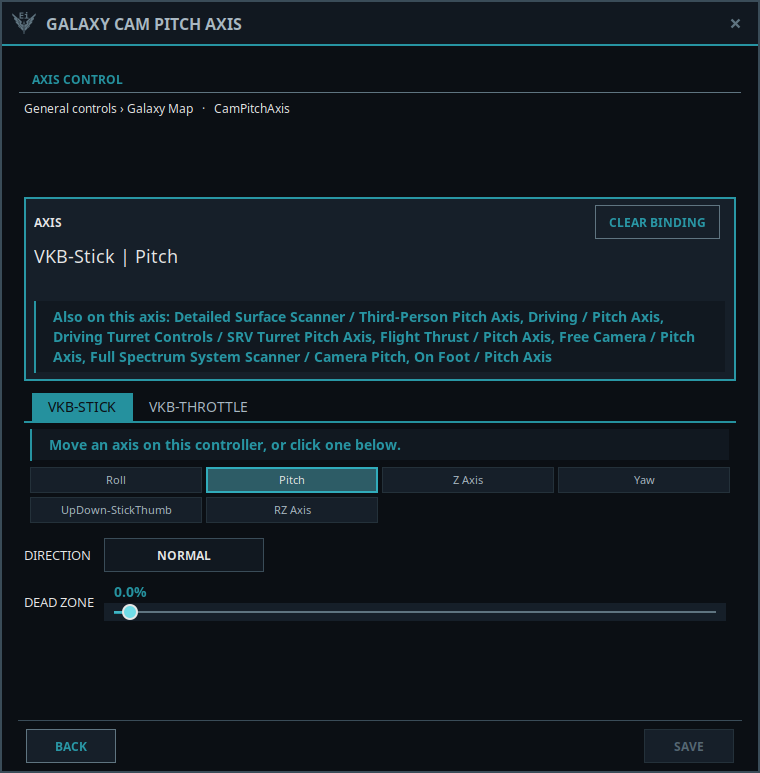
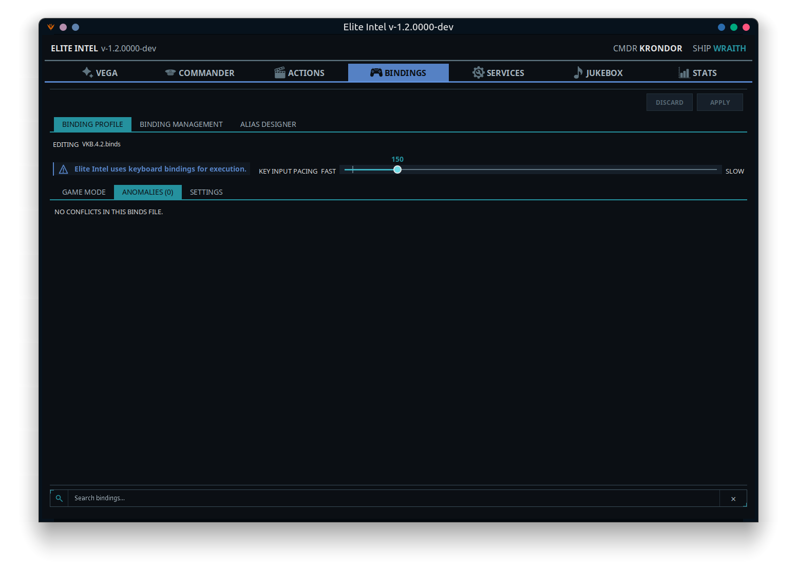
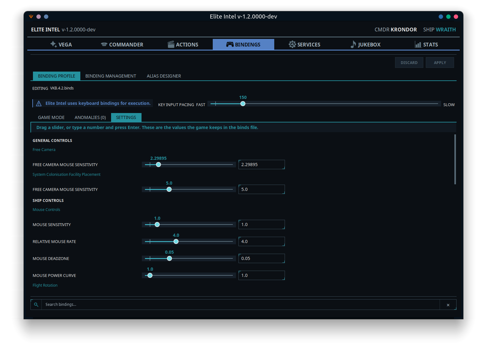
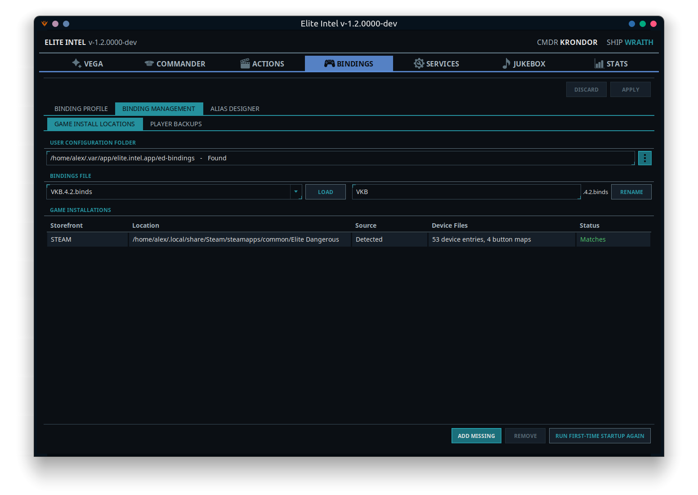
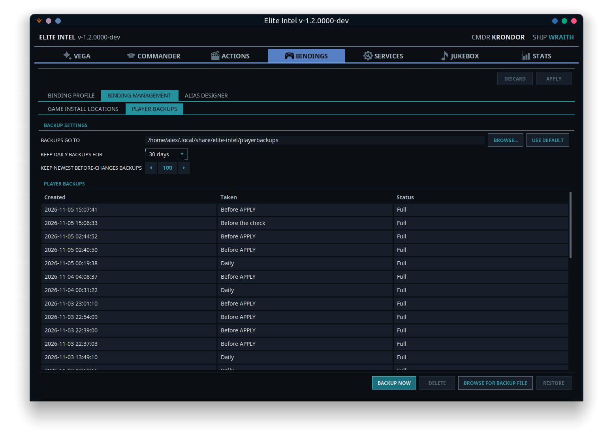
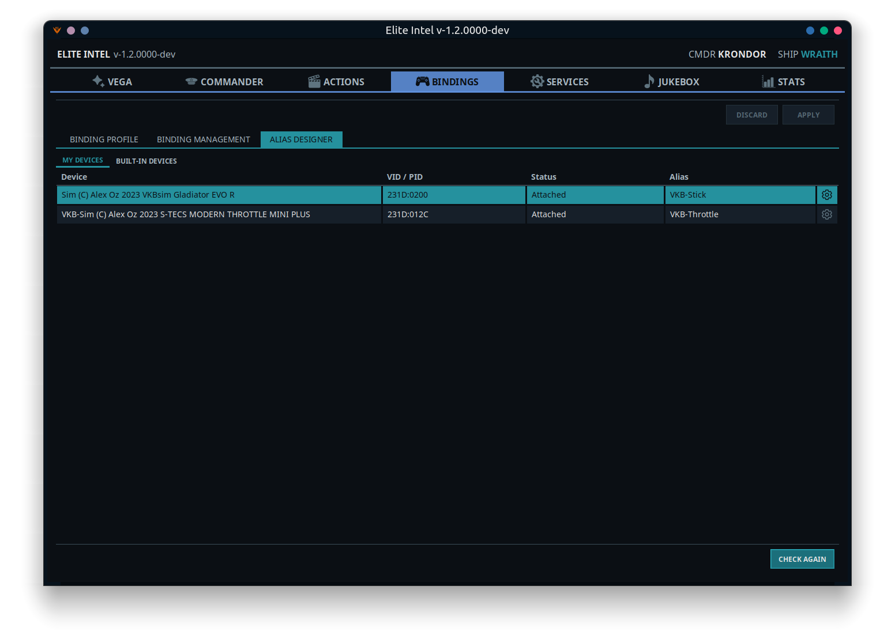
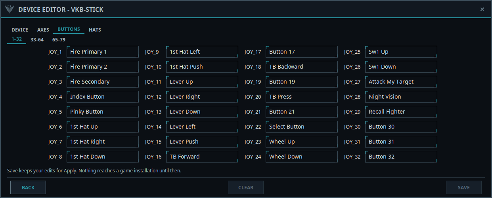

BindForge — the BindForge Tab
 BindForge edits and
protects your Elite Dangerous controls from outside the game: keyboard, mouse, joystick, HOTAS and
pedals. It looks after all the files behind them — your
BindForge edits and
protects your Elite Dangerous controls from outside the game: keyboard, mouse, joystick, HOTAS and
pedals. It looks after all the files behind them — your .binds files, the preset file that says
which one loads, and the DeviceMappings.xml and .buttonMap files that name your controllers and
label their buttons.
It has a tab of its own, BindForge, with four sub-tabs and one bar above them:
| Part | What it is for |
|---|---|
| Apply bar | Your User Configuration Folder, and the one Apply and Discard for everything on this tab |
| Bind Editor | Every control in the game, by section, with the Anomalies and Dead Zones & Sensitivity views |
| Preset Editor | Which binds file the game loads for General, Ship, SRV and On-Foot controls |
| Binding Management | Your game installations, your binds files, and your backups |
| Alias Designer | Give your controllers real names and label their buttons, axes and hats |
Vega still presses only keyboard keys. You can bind any device in any slot, but a control needs a keyboard key for Vega to operate it. The AI access column shows you which ones do.
The first time you open it
Before it changes anything, BindForge sets itself up once. Everything is backed up first, and that backup is kept forever.
- Confirm your installations. BindForge lists every copy of Elite Dangerous it found on this PC. Use Add Missing or Remove to correct the list, then Confirm.
- Reconcile, if you need to. If your installations hold different device files, use one installation's files for all of them, or Merge and answer each row marked choose.
- Create your working copy. BindForge makes its own copy of your control files. This is the copy you edit, and your game files stay untouched until you press Apply.
- Name your controllers. Any attached controller without a name is offered a name. You can Skip this.
Until you have finished, the first-time startup is offered again whenever you open the tab.
New to Elite Dangerous?
A brand new commander has no control files at all, and Vega tells you so. Complete your commander training, then in the game's Options → Controls, set the galaxy map UI movement to the arrow keys and apply. That creates the files and Vega can read them.
If you have the game's files but no binds file of your own, a Create button appears on the Apply bar and the editor tabs stay greyed out. Choose one of Frontier's presets to Start from, give yours a Name, then press Apply to write it to the game. If you are a returning player, restore a backup from Player Backups instead.
The Apply bar
The bar above the sub-tabs holds the User Configuration Folder and the Discard and Apply buttons.
User Configuration Folder is where your .binds files and the preset file live, and every
installation shares it. It is detected automatically. Use the ⋮ picker if yours is somewhere
unusual.
"Cannot find bindings" with the right folder? Elite Dangerous does not write a
.bindsfile until you customise something. Open Options → Controls in the game, change any binding, and Elite Intel picks the file up.
Nothing you do on these tabs touches the game until you press Apply. Your changes collect as edits, and Apply and Discard light up as soon as there are some.
| Button | What it does |
|---|---|
| Apply | Backs up everything, then writes your edits to the game's files and reports what it wrote to each installation |
| Discard | Throws away every edit you have not applied. The game's files are not touched |
Close the game's Controls screen before you apply. Changes made in BindForge and in the game at the same time can be lost. To make the game load a changed binds file, open and then close its Controls screen after applying. Vega reminds you.
If you leave the tab or close the app with edits not applied, you are asked to Apply, Discard or Go back.
Read only while an installation is missing
If one of your game installations cannot be found — usually because its drive is unplugged — BindForge turns read only. The bar says which installation is missing, Vega tells you at startup, and nothing on the tab can be changed, so that installation never falls out of step with the others.
Plug the drive back in and restart Elite Intel, or Remove the installation in Game Install Locations if it is gone for good. Override on the bar turns editing back on until Elite Intel closes: Apply then writes to the installations that are there, and when the missing one returns it is compared at the next start and you choose what to keep.
When the game changed your files
The game can change its own files, and a game update can reset them. BindForge compares them with its working copy the first time you open the tab in a session, and again at every Apply. If they differ, Vega tells you at startup, and the tab lists what changed and lets you choose:
| Choice | What happens |
|---|---|
| Put mine back | Your working copy goes back to the game. Usually right when a file looks reset by an update |
| Merge... | Every line that differs is a row. Click the value to keep, yours or the game's |
| Use the game's files | The game's files replace your working copy |
Everything is backed up before any of these writes, and you can close the warning to decide later. Closing it during an Apply cancels the Apply and keeps your edits.
A new version of your binds file. Game updates sometimes save your binds file under a new name with new controls in it. BindForge never writes your old file over that one. If all your bindings carried over, you just Approve it. If some differ, Reconcile... keeps the new controls and asks about each line that differs.
Files that do not belong there. If the game's bindings folder holds files the game does not use — a hand-copied binds file with no version in its name, say, or an unrelated file — Vega mentions it and the check offers Tidy up. That moves them to Leftover User Files, in Elite Intel's own folder. Nothing is deleted, and you can open that folder yourself. A binds file without a version is first copied into your files with a version in its name, unless you already have one by that name.
Bind Editor

The Editing line at the top names the binds file you are looking at. To open a different one, use Bindings File under Binding Management.
Key Input Pacing is a Fast ↔ Slow slider for the pause Elite Intel holds after each keystroke it sends to the game. If the game drops keystrokes on slower hardware — a macro that only half-runs, a panel that opens on the wrong tab — move it towards Slow.
One row of tabs runs across the editor: All, General, Ship, SRV and On-Foot, each with a count, then Anomalies and Dead Zones & Sensitivity. The section tabs show every control, grouped under the game's own headings and in the same order as its Controls screen, so you can read the two side by side.
| Column | Meaning |
|---|---|
| Binding | The control |
| Primary / Secondary | The two slots Elite Dangerous gives every control, showing your own names for controllers and buttons. On an axis row, Primary is the axis and Secondary its direction and dead zone |
| AI access | Whether Vega can operate this control (see below) |
| Action | Clear removes the keyboard key (or the axis), leaving controller and HOTAS bindings alone. Auto fix appears on a control Vega needs that has no key, and gives it a safe free one |
| AI access | Meaning |
|---|---|
| Vega uses this | Vega presses this control with its keyboard key. Keep a key on it |
| Vega can't use | Vega needs this control, but it has no keyboard key. Put one in the empty slot — your controller binding keeps working |
| Vega needs a key | Vega needs this control and nothing is bound to it |
Along the bottom are the search, three filters and the auto-assign button:
- Search bindings... matches the section, group, control name and raw
.bindstag, plus the controller and button names on a binding. It works on every tab, and the counts on the section tabs show where the hits are. - Show conflicts only — only the rows in conflict.
- Show unassigned — only the controls with nothing bound, on the keyboard or on any controller.
- Show required by Vega only — only the controls Vega presses, for its built-in commands and your custom commands.
- Auto-Assign VEGA Required Binds — see below.
Assigning a button or key
Click either slot of a row to open Assign control. The dialog shows both slots as cards, and the highlighted card is the one your next input goes into. Click the other card to fill that one instead, or use the swap button between them to exchange Primary and Secondary.

Below the cards there is a Keyboard tab, a Mouse tab, and one tab for each connected controller.
- Keyboard — click the field, then press the keys together with any modifiers, up to three. Esc cancels. Hold Ctrl, Shift or Alt to see the keyboard map for that combination: green is free, red is already used. Reserved keys, such as the game-menu key and Alt+F4, cannot be assigned.
- Mouse — point at the box and press the mouse button you want. The left button counts too, and clicks anywhere else in the window work as usual. The wheel is never picked up by accident: click Wheel up or Wheel down instead.
- A controller — press a button or push a hat on the controller, or click one in the Buttons or Hats list. A button or hat is picked when you let go of it, so a shift-button combination is always picked whole. Buttons you are already holding become modifiers: keep the shift button held and press other buttons one after another to try each combination. The Axis directions page has a − and a + for each axis, for controls that act on one direction of an axis; push the axis or click the one you want.
- With Shift, With Ctrl and With Alt, on each controller tab, bind a stick or throttle button together with that keyboard key. Only these three can be combined with a controller, so they never clash with the keys Vega presses.
Green is free, red is used by another control, and blue is what this control holds now. A controller needs a name from the Alias Designer first. A controller that is not plugged in can still be bound by clicking its inputs, and one you plug in while the dialog is open comes to life in it. A slot holds at most three modifiers — held buttons and keys together.
An input another control already holds cannot be assigned. The card names that control, and Save stays dimmed until you free it there. If a change would take away the last keyboard key on a control Vega uses, the dialog warns you. Save keeps your changes as edits, ready for Apply.
Gamepads are only partly supported so far. Gamepad sticks cannot be assigned here yet.
Assigning an axis
Axis controls, such as pitch, yaw and throttle, sit among the other rows and open a dialog of their own.

Move an axis on the controller, or click one in the list. Then set its Direction (Normal or Inverted), its Dead zone, and, on the controls that have one, its Throttle range (Full range or Forward only). Several controls can share one axis, and that is normal: the dialog tells you what else is on it, and you decide.
Anomalies

The rows that are in conflict, gathered in one place, with their count on the tab. These are the same rows the section tabs draw in red, and clicking one opens the same dialog. When Vega warns you about a binding conflict, look here.
Conflicts are found on every device: keyboard, mouse, joystick and HOTAS. The same button number on two
controllers is two different buttons — Joy_1 on your left stick never clashes with Joy_1 on your
right.
Elite Dangerous treats a chord as conflicting only when it is exactly the same chord — G and
Shift+G coexist happily. Elite Intel follows the same rule. Controls that can never be active at the
same time are not flagged: a ship control and an SRV control, or a System Colonisation placement control
and a flight control (the game switches flight off while you place a facility). Hover over a row to see
Shares key with: and the list, for every slot in conflict.
Shift buttons. If you hold a stick button as a modifier for other bindings and also bind that button on its own, pressing it fires that control as well. BindForge warns you about it.
You may also see Ship/SRV twin — many bind it the same as: on a row. That is a suggestion, not a conflict: some ship and SRV controls are conventionally bound to the same key.
Vega also speaks about bindings that will actually break things, and names the keys in the diagnostics log:
- Galaxy map movement and interface navigation on the same key. Route plotting cannot work until the map and the interface have separate keys.
- A control on your game-menu key. Elite opens the game menu on any combination ending in that key, so the control can never be pressed. The fix is to clear the game-menu binding in the game — Escape opens that menu anyway.
- A control on a combination the operating system takes first (such as Alt+F4). Pressing it closes the game or leaves your session.
Dead Zones & Sensitivity

The sensitivities, dead zones and power curves your binds file holds, grouped the way the game groups them. Each has a slider and a number beside it. Drag the slider, or type a number and press Enter.
The slider covers the same range as the game's own slider. The number is the exact value, and it is the only way past the slider's limits. A value already outside them stays as it is until you move it.
Auto-Assign VEGA Required Binds
One button that gives a safe, layout-friendly keyboard key to every control Vega presses that has none, including the controls your custom commands use. Other controls are left as they are; to bind one of those, click its Primary or Secondary cell.
- Existing bindings on any device are never changed. Only an empty slot is filled.
- No key is ever reused.
- The changes go into your edits, so you can review them before you Apply.
It reports what it did, what it skipped and why: both slots already on a controller, no free safe key left, or no slot it could edit safely. Two controls stay unbound on purpose: the game menu (Escape already opens it) and eject all cargo (it empties the hold into space, and no Elite Intel command presses it).
Preset Editor

The game reads its controls in four sections — General, Ship, SRV and On-Foot — and
each section loads the binds file its line in the preset file names. The Preset Editor shows those four
lines as dropdowns and lets you point each one at any of your binds files. Frontier's own presets are in
the lists too, marked (factory). The lists show the name the game shows, so Custom.4.2.binds
appears as Custom.
- Set all to same points all four sections at the file chosen beside it, in one step.
- A section that names a file BindForge cannot find, or nothing at all, is shown in red. The game would load something else there, so Apply refuses until you choose a real file.
- A note appears when the four sections use different files. The game supports that, so it never stops you.
As everywhere on the tab, nothing is written until you press Apply, and Discard puts the dropdowns back.
Which binds file does Vega read?
Vega reads the keys it presses from one binds file. If your four sections use different files, the first time you open the BindForge tab in a session it asks Which binds file? and lists them. Pick one, and it asks whether that should be the only binds file the game uses:
- Yes — BindForge backs up your files and sets all four sections to it straight away. This is the safe choice: the keys Vega presses are then the keys the game uses.
- No — Vega reads the file you picked for this session. Controls in a section that uses another file may not work when Vega presses them. The question comes back at the next start, for as long as the sections stay on different files.
If your General controls are on a different file from the one Vega reads, Vega also warns you at startup — route plotting is the usual casualty, because the galaxy map keys may not be the ones the game is using.
Binding Management
Your files, with two tabs of its own: Game Install Locations and Player Backups.
Game Install Locations

Bindings File lists your binds files, including any edits not applied. Choose one and press Load to open it in the Bind Editor, or type a new name and press Rename. A rename is an edit like any other, and it reaches the game when you press Apply.
Game Installations lists every copy of the game BindForge knows about. Each one has its own
DeviceMappings.xml and .buttonMap files, and BindForge keeps them identical.
| Column | Meaning |
|---|---|
| Storefront | Where this copy came from: Steam, Epic, Frontier or Oculus |
| Location | Its folder |
| Source | Detected, or Added by hand |
| Device Files | How many device entries and button maps it holds, and how many are orphaned |
| Status | Matches or Differs from your working copy, or Not found |
Add Missing adds an installation BindForge did not detect. Remove stops BindForge backing up or writing to one. If you move the game, press Remove, then Add Missing.
Player Backups

Protecting your controls is the main reason BindForge exists. A complex setup takes hours to build,
and a game update can reset it. BindForge backs everything up on its own, and each backup is one
date-stamped .zip holding your binds files, the preset file, and the device files from every
installation.
The Taken column says why each backup exists, and that decides how long it is kept:
| Taken | When | Kept |
|---|---|---|
| Daily | The first time Elite Intel starts each day | By age: 30 days by default, or 60, 90 or 180 |
| Before APPLY, Before RESTORE, Before the check, Before changes | Automatically, before BindForge writes anything | The newest 100 by default, up to 1000 |
| User | When you press Backup Now | Until you delete it |
| First setup | Before first-time startup | Forever |
| Button | What it does |
|---|---|
| Backup Now | Take a backup yourself. Do this before you start experimenting |
| Restore | Put the selected backup back: every binds file, the preset file, and the device files in every installation. Your files as they are now are backed up first |
| Browse for Backup File | Restore a backup that is not in the list, such as one you carried over from another computer |
| Delete | Delete one of your own User backups permanently |
Only restore your own backups. A backup from another player holds their controllers, not yours.
Backup Settings sets where backups go (Backups go to, with Browse... and Use Default) and the two retention rules. A folder inside a game installation is refused, because a game update would delete your backups along with it.
Alias Designer

Out of the box, the game knows many controllers only by a hardware ID, and its Controls screen shows their buttons as anonymous numbers. The Alias Designer gives each controller a real name, and each button, axis and hat a label of your choice. The labels appear in the game's Controls screen and in the Bind Editor.
My Devices lists your controllers: Device, VID / PID, Status (Attached or Missing) and Alias. Built-in Devices is a read-only list of the controllers Frontier ships with the game. Check Again re-reads what is attached.
Naming a controller
When a controller has no name, Name your controllers walks you through naming it. It runs after first-time startup and on Check Again, and you can start it for a single controller from its gear icon. Skip takes the default name.
A name uses the letters A to Z, digits, - and _, and must start with a letter, with no spaces or
accents. It cannot be too close to a name already in use. Any bindings that know the controller only
by its hardware ID move to the new name when you apply.
The Device Editor
Press the gear on a device's row to open it.

- Device — the name, VID, PID, hardware name and status. Change the name here, and Apply renames it in every installation and moves the bindings that use it.
- Axes, Buttons, Hats — type a label for each input. Tabs appear only for the kinds of input the controller has. Use an input and its box lights up, so you can see which one is which, and axes show a live meter.
Save keeps your edits for Apply; nothing reaches the game until then.
- Clear removes the device's entry and labels from your game files when you apply. If your bindings use the controller, they are not lost: they move to its hardware ID, so they keep working while it is plugged in but lose your name for it. (On one of Frontier's built-in controllers that you renamed, they go back under the game's own name.) The question tells you how many bindings move and where. Undo Clear puts them back.
- Reset Labels puts the default labels back.
On one of Frontier's built-in devices you can change the labels. To use a name of your own, plug it in and type the name in the box: your entry goes ahead of Frontier's, and typing Frontier's name again goes back.
When your hardware changes
If a named controller your bindings use is missing, Vega tells you: its bindings will not load until it is connected. A firmware update can also change a controller's product ID, and a replacement has a new one. BindForge can spot this, and Is this the same controller? asks which attached controller it is. Answer, and its bindings follow it when you apply.
Bindings refer to buttons by number. If the replacement is a different model, some bindings may end up on unexpected buttons. Review in Bind Editor takes you straight to them.
Community 👉Matrix👈